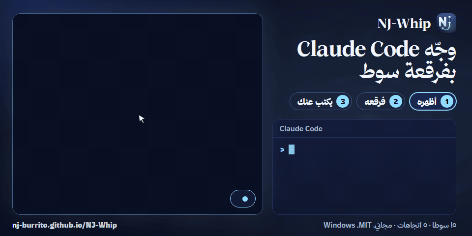
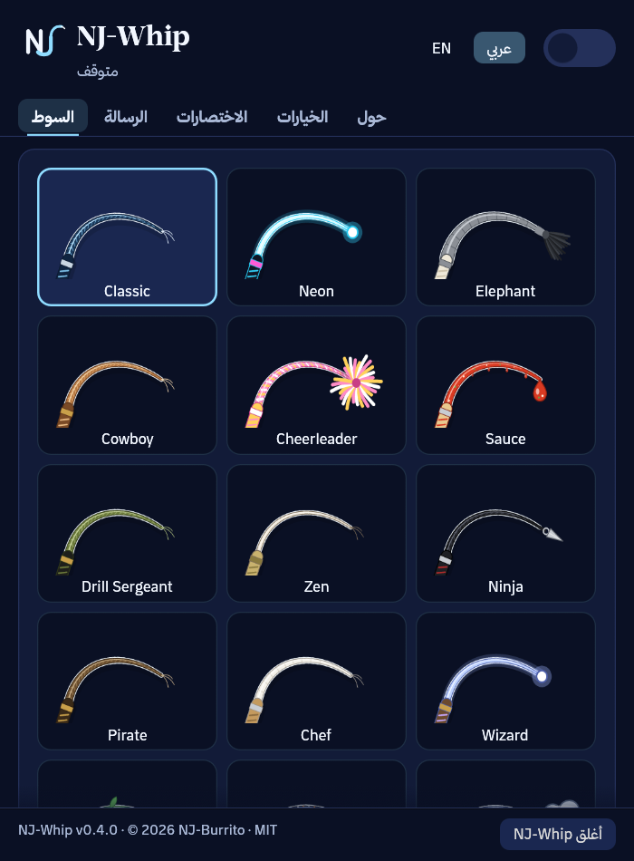

وجه Claude Code بفرقعة سوط
يضع NJ-Whip سوطا عند مؤشر الفأرة. لوح به فيفرقع، ثم يكتب لـ Claude تعليمة قصيرة حقيقية: اسلك أقصر طريق، وتحقق من العمل، وابق في المهمة.
مجاني ومفتوح المصدر برخصة MIT. ملف exe واحد، حجمه نحو 6.7 ميغابايت، بلا برنامج تثبيت وبلا حساب. لنظامي Windows 10 (بتحديث 2004 أو أحدث) وWindows 11. الإصدار 0.4.0.

ماذا يفعل لعملك
الفرقعة رسالة قصيرة إلى Claude.
كل سوط من الأسواط الخمسة عشر يرسل تعليمة حقيقية في واحد من خمسة اتجاهات.
-
أظهره
اضغط Ctrl+Alt+Q فيظهر السوط عند مؤشر الفأرة. اضغط مرة أخرى فيسقط.
-
فرقعه
اسحبه في اتجاه، ثم اخطفه في الاتجاه المعاكس. ويمكنك أيضا أن تنقر، أو أن تضغط Ctrl+Alt+W.
-
يكتب عنك
تدخل رسالة واحدة النافذة التي كنت فيها آخر مرة: عبارة السوط المرحة، ثم تعليمة حقيقية، ثم Enter.
الاتجاهات الخمسة
| الاتجاه | يطلب من Claude | ما يكتبه، وكيف يرسل | الأسواط |
|---|---|---|---|
| أسرع Faster | أن يجري أصغر تغيير يؤدي الغرض، بلا انعطافات، ثم يتوقف ويبلغك. | Smallest change that works; no extra files, docs or refactors. When it's done and checked, stop and report.في قائمة الانتظار، دون Esc |
Classic، Cowboy، Pirate، Penguin |
| أكثر اجتهادا Harder | أن يجري فحصا حقيقيا قبل أن يقول إنه انتهى، وأن يعرض الناتج. | Before you say done, run a check that exercises the change and show the output; say what you couldn't run.في قائمة الانتظار، دون Esc |
Elephant، Drill Sergeant، Storm |
| أكثر حذرا Careful | أن يقرأ كل ملف وكل ما يستدعيه قبل أن يغير شيئا. | Continue, carefully: read each file and its callers before you change it, state the change in two lines, then proceed.بعد Esc |
Zen، Chef، Vine |
| أكثر بهجة Happier | أن يعمل بهدوء، وأن يقول بوضوح متى فشل شيء. | Good progress, no rush. If something fails or can't be done, say so plainly with the output, then carry on.في قائمة الانتظار، دون Esc |
Cheerleader، Sauce |
| تركيز Focus | أن يبقى في المهمة التي طلبتها، وأن يؤجل الأفكار الجانبية إلى النهاية. | Continue only the task I asked for. When it's done and checked, stop and report; list ideas at the end.بعد Esc |
Neon، Ninja، Wizard |
- في قائمة الانتظار، دون Esc
- يرسل النص ثم Enter. يقرأ Claude العبارة عند خطوته التالية، ولا يلغى شيء مما يعمله.
- بعد Esc
- يضغط Esc أولا، فيتوقف Claude قبل خطوته التالية. وتبدأ هذه العبارات بكلمة «Continue».
العبارات أعلاه من حزمة Plain بصياغتها Light. الحزم ست، والنافذة تعرضها كلها.
الصياغة تتبع إرشادات منشورة عن توجيه Claude Code.
لم يجر قياسها على جلسات حية، ولذلك لا تذكر هذه الصفحة رقما للسرعة.
جربه هنا
حرك المؤشر فوق الشاشة أدناه: السوط في يدك.
اسحبه في اتجاه واخطفه في الاتجاه المعاكس فيفرقع. والنقرة تفرقعه أيضا. وعلى الهاتف، اسحب بإصبعك يمينا ويسارا لتلوح، والمس الشاشة لمسة لتفرقع.
كل فرقعة تترك أثرها في موضع السقوط، ويتلاشى خلال 3 ثوان: بركة لسوط Sauce، وثقب رصاصة لسوط Drill Sergeant، وجرح يقطع الشاشة لسوط Ninja. ويترك سوط Sauce أيضا أثرا يتلاشى خلال 3 ثوان.
هذا محرك التطبيق نفسه، مجهزا للمتصفح: الأسواط نفسها، والفيزياء نفسها، وطريقة رصد الفرقعة نفسها.
حرك المؤشر هنا. اسحب في اتجاه ثم اخطف.
لم تعمل الغرفة الحية في هذا المتصفح، فهذه صورة ثابتة منها: سوط Sauce في منتصف التلويح ومعه أثره.
15 سوطا، لكل سوط شخصيته
مر بالمؤشر فوق سوط فيميل نحوه. اضغطه فيفرقع بصوته الخاص.
لكل سوط شكله وطرفه ووزنه وتأثير فرقعته وعباراته وعبارة تتابعه. السوط الثقيل يتأخر عن يدك، والخفيف يستجيب فورا.
سوط Sauce يترك أثرا من الصلصة يتلاشى خلال 3 ثوان. اختر Sauce في الغرفة لتراه.
الصوت متوقف إلى أن تشغله أو تضغط سوطا.
للسوط صوت فرقعة خاص به حيثما وجد تسجيل حقيقي مرخص. وتشترك البقية في خمس فرقعات جلدية.
يمكن لأي سوط أن يحمل صورة من عندك طرفا له. وتبقى الصورة على حاسوبك.
واصل الفرقعة فتدفأ الشاشة
مؤشر الحرارة. يمتلئ بعد 4 فرقعات، ويفرغ بعد نحو ثانية من آخر فرقعة.
الحرارة الكاملة. تتوهج حواف الشاشة بنعومة بلون السوط نفسه وأسلوبه. التوهج لا يكون أحمر أبدا، والشاشة لا تهتز أبدا.
التتابع. فرقع مرة أخرى في الوقت المناسب فتظهر عبارة تتابع مثل STOMP ×3.
لم يعمل العرض الحي في هذا المتصفح، فهذه صورة ثابتة: سوط Neon عند الحرارة الكاملة، وحواف الشاشة متوهجة بالأزرق.
نافذة صغيرة واحدة
يحفظ كل شيء فور تغييره. ويبقى رأس النافذة وتذييلها في مكانهما بينما يتحرك المحتوى.
- السوط
- اختر واحدا من الأسواط الخمسة عشر. واختيار السوط يشغل صوته.
- الرسالة
- اختر حزمة التعليمات وأضف عبارات من عندك.
- الاختصارات
- غير المفاتيح التي تظهر السوط وتفرقعه.
- الخيارات
- مؤشر الحرارة، والفرقعة بالتلويح، و«ابدأ مع Windows».
- حول
- رقم الإصدار، وزر «ابحث عن تحديث».
واجهة عربية. يبقى ترتيب النافذة كما هو. تتحول الكلمات إلى العربية وتقرأ من اليمين إلى اليسار.
التحديث. لا يسأل NJ-Whip موقع GitHub عن أحدث إصدار إلا حين تضغط «ابحث عن تحديث». ولا يثبت التحديث إلا بعد أن توافق.
أعد ضبط Claude. زر يكتب «normal mode» ثم «Continue.».
حزم التعليمات الست
- Plain
- nj-kit
- Surgical
- Quiet
- Superpowers
- Plan-first


خفيف على حاسوبك
صمم NJ-Whip ليكون خفيفا، وفي الحسبان الحواسيب القديمة والضعيفة المواصفات.
هو ملف exe صغير واحد، والسوط يرسم بالمعالج.
| الذاكرة، وهو ساكن في منطقة الإشعارات | نحو 20 ميغابايت الذاكرة العاملة |
|---|---|
| المعالج، وهو ساكن في منطقة الإشعارات | نحو 0.5% من نواة واحدة |
| حجم ملف exe | نحو 6.7 ميغابايت |
الخصوصية
لا حساب. لا جمع لبيانات الاستخدام. اتصال واحد بالشبكة، وحين تطلبه أنت فقط.
الاتصال الوحيد بالشبكة هو البحث عن تحديث، وأنت من يبدؤه من تبويب «حول».
إعداداتك في ملف واحد على حاسوبك:
%APPDATA%\NJ-Whip\config.tomlهذه الصفحة بلا أدوات تحليل، ولا تحمل شيئا من مواقع أخرى.
احصل على NJ-Whip
- نزل NJ-Whip.exe.
- شغله. تفتح النافذة وتظهر أيقونة البرنامج في منطقة الإشعارات.
- حول المفتاح إلى «يعمل».
ملف exe واحد، حجمه نحو 6.7 ميغابايت. بلا برنامج تثبيت وبلا حساب. لنظامي Windows 10 (بتحديث 2004 أو أحدث) وWindows 11. الإصدار 0.4.0، مكتوب بلغة Rust، ومجاني برخصة MIT.
ملاحظات صريحة
ملف exe لا يحمل توقيعا رقميا، فقد يسألك Windows SmartScreen قبل التشغيل الأول.
الفرقعة تكتب في أي نافذة كنت فيها آخر مرة، ومنها محرر الشيفرة.
هذا إصدار مبكر. وليست كل الأماكن التي تكتب فيها لـ Claude (لوحة VS Code، الطرفية، تطبيق Claude لسطح المكتب، claude.ai/code) مختبرة يدويا بعد.
NJ-Whip مشروع مستقل، وغير تابع لشركة Anthropic.
أسئلة
هل يجعل عمل Claude أسرع؟
يرسل تعليمة تطلب أصغر تغيير يؤدي الغرض وبلا انعطافات. والصياغة تتبع إرشادات منشورة عن توجيه Claude Code.
لم يقس أثره على جلسات حية، فلا يوجد رقم للسرعة نذكره.
هل تقاطع الفرقعة عمل Claude؟
عبارات Faster وHarder وHappier تدخل قائمة الانتظار دون Esc، فلا يلغى شيء مما يعمله Claude.
وعبارات Careful وFocus ترسل بعد Esc، فيتوقف Claude قبل خطوته التالية.
أين يكتب؟
في أي نافذة كنت فيها آخر مرة. وهو مصنوع لـ Claude Code أينما كتبت له: لوحة VS Code، أو الطرفية، أو تطبيق Claude لسطح المكتب، أو claude.ai/code.
يسألني Windows قبل تشغيله. هل هذا متوقع؟
نعم. ملف exe لا يحمل توقيعا رقميا، فقد يسألك SmartScreen قبل التشغيل الأول: اختر «More info» ثم «Run anyway».
الشيفرة المصدرية مفتوحة، ويمكنك أن تبني الملف بنفسك.
هل يناسب حاسوبي القديم؟
صمم ليكون خفيفا، والأرقام المقيسة في قسم خفيف على حاسوبك.
لم يختبر بعد على حاسوب قديم. ويحتاج إلى Windows 10 (بتحديث 2004 أو أحدث) أو Windows 11، ونافذة الإعدادات تحتاج إلى OpenGL.
كيف أحدثه؟
افتح تبويب «حول» واضغط «ابحث عن تحديث». لا يسأل NJ-Whip موقع GitHub عن أحدث إصدار إلا حين تضغط هذا الزر.
ولا يثبت التحديث إلا بعد أن توافق.
هل أستطيع تغيير ما يكتبه؟
نعم. اختر واحدة من ست حزم تعليمات، وأضف عبارات من عندك لكل سوط، وغير المفاتيح التي ترسلها الفرقعة.
هل يعمل بالعربية؟
للنافذة واجهة عربية. أما الرسائل التي تكتبها الفرقعة لـ Claude فبالإنجليزية.
هل توجد نسخة لنظام Mac أو Linux؟
لا. NJ-Whip لنظام Windows فقط.
من أين تأتي الأصوات؟
من تسجيلات برخصتي CC0 وCC BY، قصت وضبط مستوى صوتها لـ NJ-Whip. أما الحفيف فيصنعه التطبيق نفسه.
القائمة نفسها في CREDITS.md.
أدوات أخرى من NJ-Burrito
- NJ-Kit
منهج عمل ومهارات لـ Claude Code. كل مهارة تنتهي ببرنامج صغير يفحص العمل.
- QA-Wrap
إضافة متصفح للمختبرين: تسجل جلسة الاختبار، وتربط كل خلل بالنقرة التي سببته، وتكتب تقرير الخلل.
- Business-Wrap
أدلة تدخل، ووثيقة متطلبات واحدة تخرج بالعربية والإنجليزية.
- Profile-Wrap
تخطط لمنشورات LinkedIn وتكتبها وتفحصها، ولا تنشر إلا بعد موافقتك.
- Story-Wrap
أدوات لـ Claude Code تصنع مقاطع قصص عربية متحركة.
- الموقع الشخصي
نادر الزغول، مهندس أتمتة ضمان الجودة في عمان، الأردن.